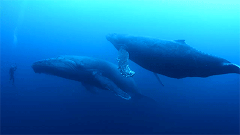
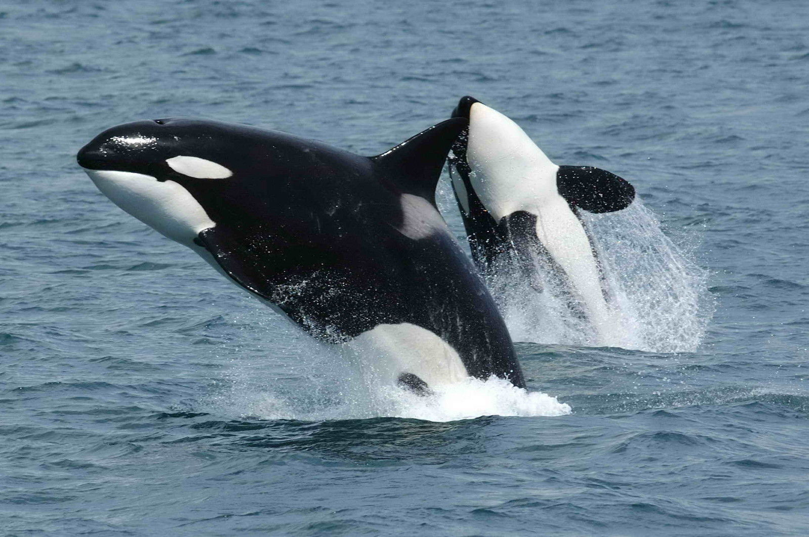

Oceans provide at least a sixth of the animal protein people eat. Living oceans absorb carbon dioxide from the atmosphere and reduce climate change impacts. The diversity and productivity of the world's oceans is a vital interest for humankind. Our security, our economy, our very survival all require healthy oceans.

Vaquitas
The vaquita will be extinct if fishery bycatch is not eliminated immediately. Nearly one out of every five vaquita get entangled and drown in gillnets intended for other marine species like the totoaba, a critically endangered fish also found in the upper Gulf of California. Entanglement in gillnets set for totoaba was the primary cause that brought the vaquita to low levels by the mid-1970s. Totoaba were overfished by the mid-1970s and were listed as endangered by Mexico in 1975, and by the US in 1979.Today, international trade in totoaba is banned under CITES, a global agreement among governments to regulate or ban international trade in species under threat, but high demand from China for its swim bladder has led to a boom in illegal totoaba fishing in the past few years. Demand for totoaba swim bladders has been driven by the belief in Chinese medicine that they are a cure to a variety of illness and diseases. Thousands of swim bladders are dried and smuggled out of Mexico, often through the United States. Fishermen receive around $4,000 for each pound of totoaba swim bladder, equivalent to half a year's income from legal fishing activities. It is this illegal trade that is currently driving the sharp decline in vaquita numbers.
From worldwildlife organization
Vaquitas are in danger
Vaquita, the world's rarest marine mammal, is on the edge of extinction. The plight of cetaceans—whales, dolphins, and porpoises—as a whole is exemplified by the rapid decline of the vaquita in Mexico, with about 10 individuals remaining. This little porpoise wasn't discovered until 1958 and a little over half a century later, we are on the brink of losing them forever. Vaquita are often caught and drowned in gillnets used by illegal fishing operations in marine protected areas within Mexico's Gulf of California. The population has dropped drastically in the last few years.
Orcas
Orcas, or killer whales, are the largest of the dolphins and one of the world's most powerful predators. They're immediately recognizable by their distinctive black-and-white coloring. Smart and social, orcas make a wide variety of communicative sounds, and each pod has distinctive noises that its members will recognize even at a distance. They use echolocation to communicate and hunt, making sounds that travel underwater until they encounter objects, then bounce back, revealing their location, size, and shape.

Saving the endangered north Atlantic right whale
Hunted since the 11th century, right whales were nearly extinct when they finally received protection from whaling in 1935. Even so, the population has struggled to recover as they face mounting modern-day threats from fishing gear entanglements, vessel strikes, habitat loss, and pollution.Since its incorporation in 2005, WDC’s North American office has run a dedicated programme to save this imperilled species and implement protective measures to save right whales from those threats. For example, WDC has worked to develop and implement rules to reduce ship strikes, successfully reducing the risk of a fatal collision by 80-90% in US waters, and to increase federally designated critical habitat to cover nearly 40,000 square miles of the US East Coast.